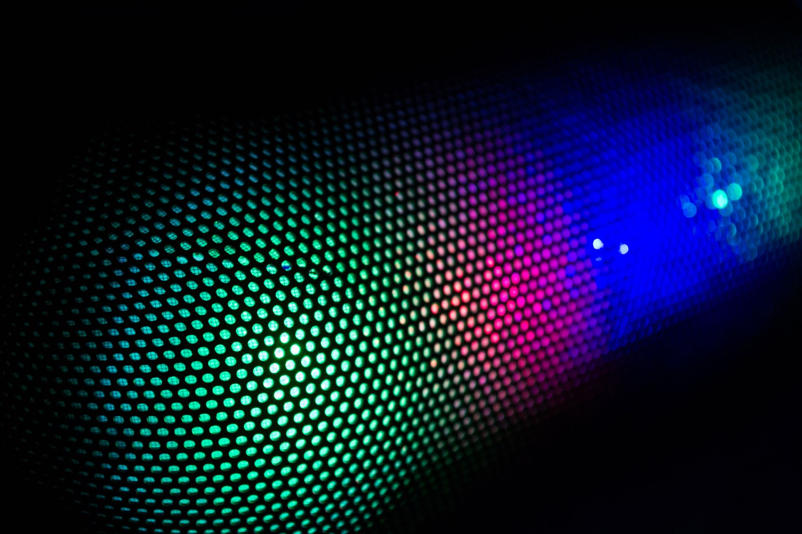

덕산네오룩스, QLEDoS 소재 원천특허 확보

덕산네오룩스가 QLEDoS 소재 분야 원천기술 확보에 성공했다고 밝혔다. QLEDoS는 양자점(Quantum Dot) 발광체를 실리콘 기판 위에 집적한 초소형 디스플레이 기술로, 기존 OLED 대비 훨씬 높은 휘도와 색재현율을 구현할 수 있어 증강현실(AR)·혼합현실(XR) 기기의 차세대 디스플레이 규격으로 주목받고 있다.
QLEDoS는 웨어러블 기기 특성상 수 마이크로미터(㎛) 수준의 초미세 픽셀에서 고휘도를 구현해야 하는 기술 난이도가 매우 높다. 기존 OLED 소재 공급망과는 다른 소재 체계가 요구되며, 발광층을 이루는 양자점 잉크 배합과 계면 설계 기술이 핵심 경쟁력이다. 덕산네오룩스가 이 영역의 원천특허를 선점했다는 점이 이번 발표의 핵심이다.
덕산네오룩스는 현재 삼성디스플레이 등 주요 패널 업체에 OLED 유기발광 소재를 공급하는 국내 1위 소재 기업이다. OLED 소재에서 쌓아온 유기분자 설계 역량과 공정 이해도를 QLEDoS 소재 개발에 접목했으며, 자체 연구소와 외부 협력 연구를 병행해 수년간 기술력을 축적해왔다.
시장 조사업체들은 QLEDoS 디스플레이 시장이 2028년 이후 본격 개화할 것으로 전망하고 있다. 애플 비전프로 후속 기기, 메타의 차세대 글래스, 삼성전자 XR 디바이스 등에 QLEDoS 채택 가능성이 거론되면서, 소재 공급 생태계 선점 경쟁도 빨라지고 있다. 덕산네오룩스의 원천기술 확보는 이 경쟁에서 유리한 고지를 점한 것으로 분석된다.
국내 경쟁사인 피엔에이치테크도 IMID 2026 전시회에서 차세대 OLED 소재 국산화 포트폴리오를 공개하는 등 디스플레이 소재 업계 전반에서 차세대 기술 대응이 분주하다. 다만 QLEDoS는 기존 OLED 소재와 다른 기술 체계를 요구하기 때문에, 특허 선점 여부가 중장기 사업 기회를 가르는 핵심 변수가 될 수 있다.
해외 경쟁 구도도 변화 중이다. 나노시스(Nanosys), 삼성SDI의 QD 소재 계열사 등 글로벌 양자점 소재 기업들이 QLEDoS 공급 기회를 노리고 있으며, 중국 소재 기업들도 자국 디스플레이 업체와 협력해 빠르게 추격 중이다. 원천특허를 확보한 기업이 라이선스 협상에서 유리한 위치에 서게 된다.
디스플레이 업계 전문가들은 '양자점 소재의 안정성과 효율성을 동시에 높이는 것이 QLEDoS 상용화의 최대 관건'이라며, '덕산네오룩스의 원천기술 확보가 실제 양산 공정에서 어떤 성능 지표로 이어지는지가 중요하다'고 말한다. 발광 효율, 수명, 색좌표 정확도가 주요 평가 항목이다.
덕산네오룩스는 이번 기술 확보를 기반으로 주요 디스플레이 제조사들과 공동 개발 프로젝트를 추진할 계획인 것으로 전해진다. OLED 소재 납품 관계에 있는 삼성디스플레이와의 협력이 QLEDoS 소재로도 이어질 경우 안정적인 초기 시장 확보가 가능하다.
투자자 관점에서 덕산네오룩스의 QLEDoS 원천기술 확보는 중장기 포트폴리오 확장의 신호탄으로 해석된다. 현재 매출 대부분이 OLED 소재에 집중돼 있는 구조에서, QLEDoS라는 새로운 성장 축이 가시화되면 밸류에이션 재평가 가능성이 높다는 분석이 증권가에서 나오고 있다.
한국 디스플레이 소재 산업은 일본 기업들의 강세가 지속되는 가운데, 덕산네오룩스·피엔에이치테크 등 국내 기업들의 기술 자립도가 꾸준히 높아지는 추세다. 차세대 디스플레이 소재에서의 선제적 원천기술 확보가 향후 글로벌 공급망에서 한국의 입지를 강화하는 데 중요한 역할을 할 것으로 기대된다.